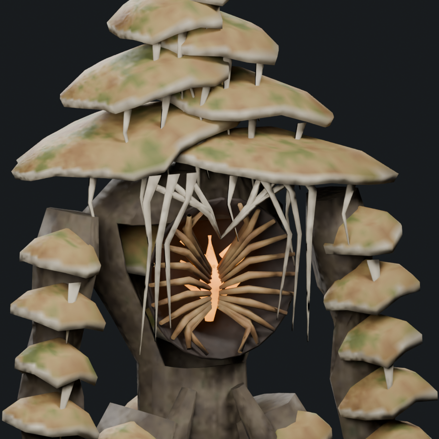
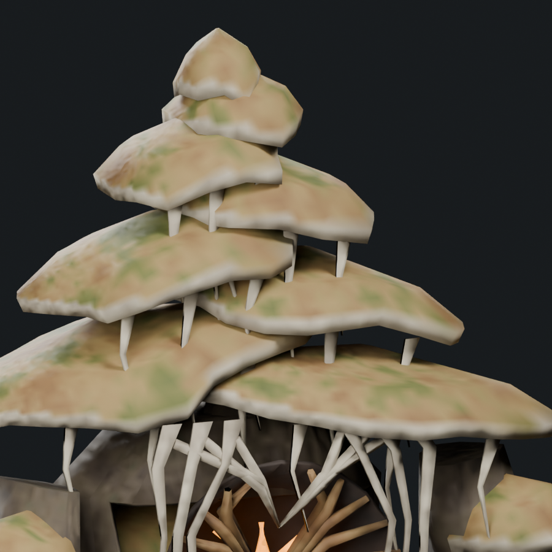
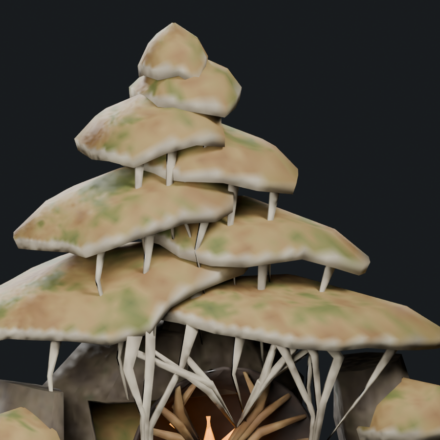
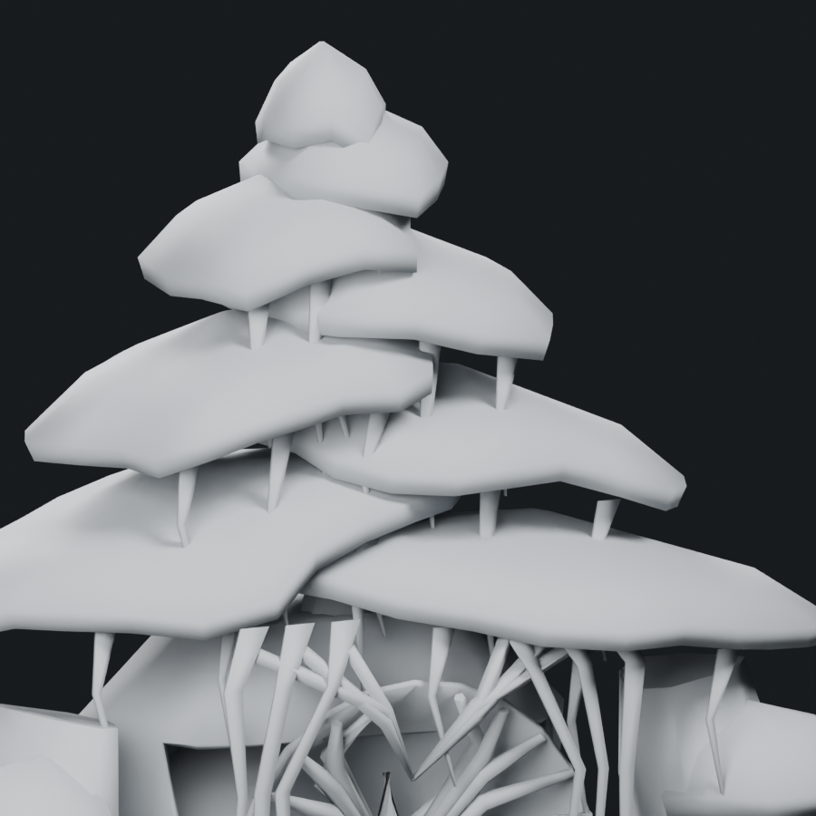
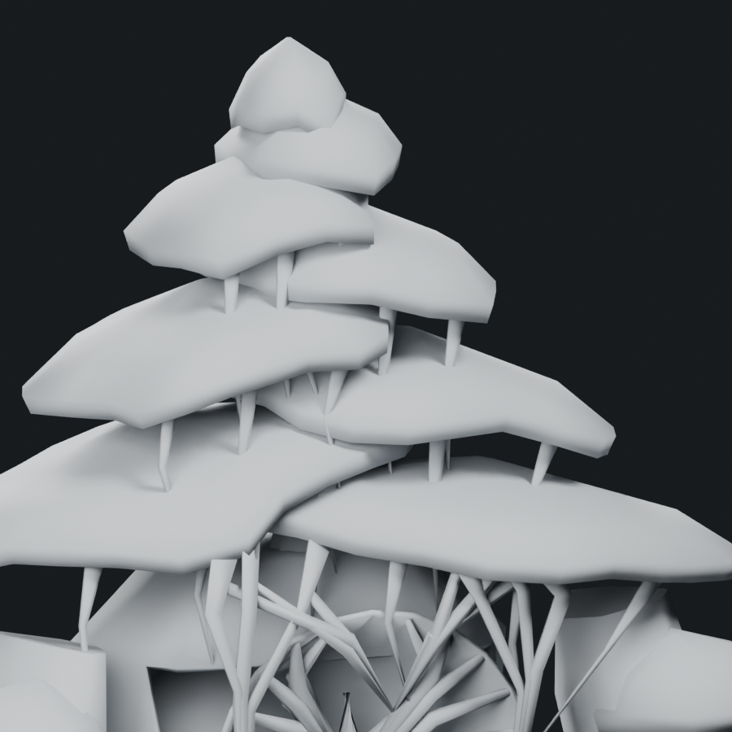
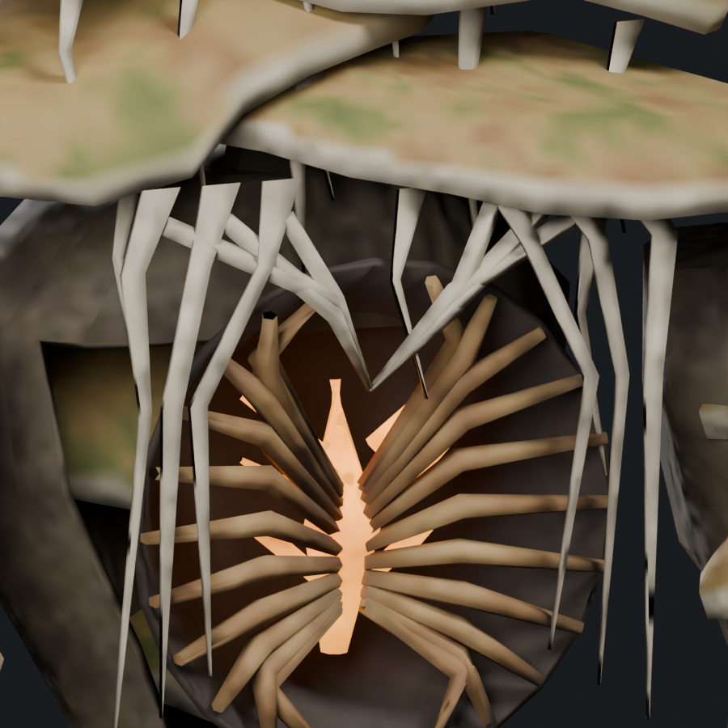
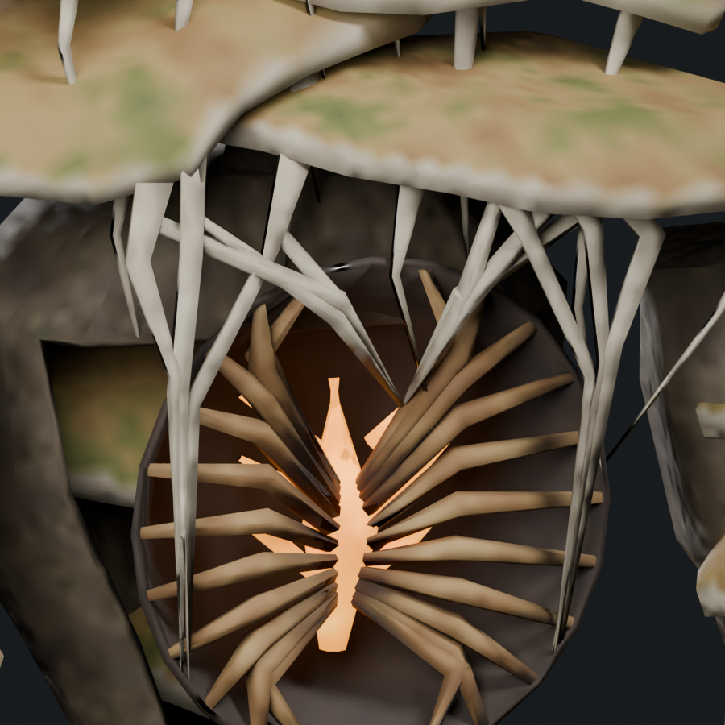
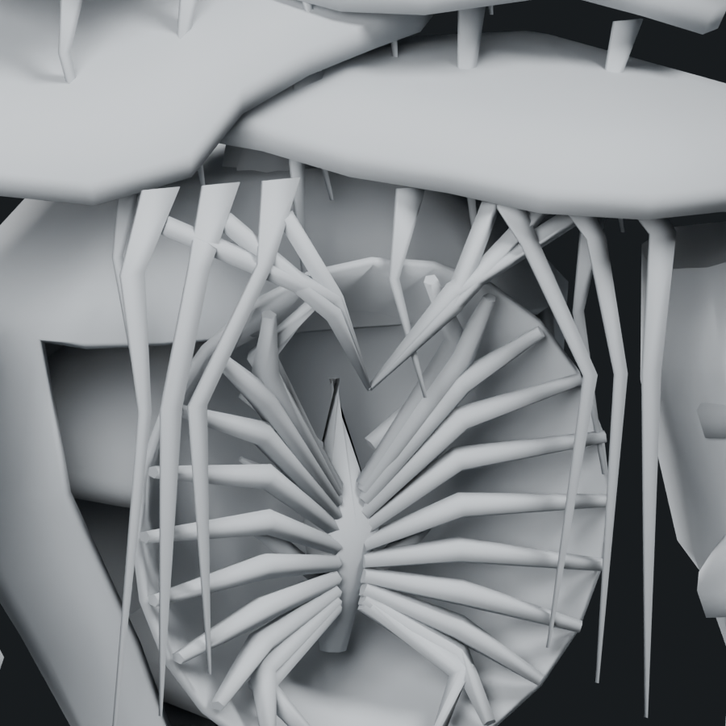
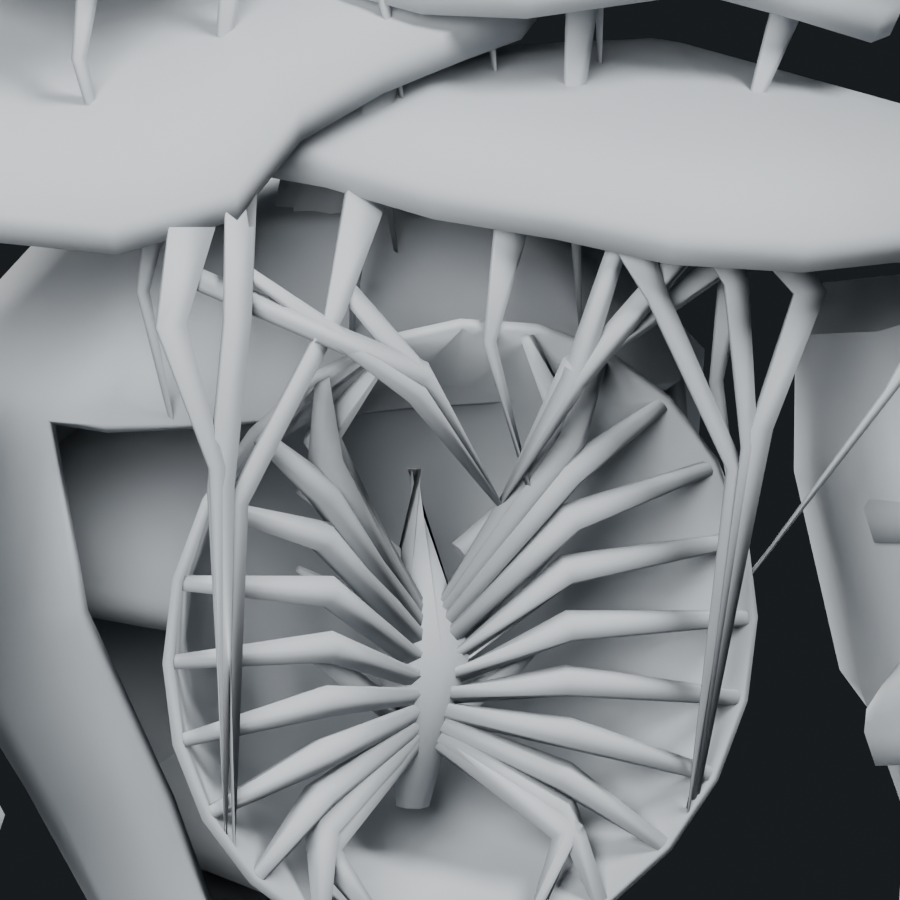

First Bloom: repair floating tissue attachments
The previous review missed tissue groups that began or ended in empty space. The repair gives each vein/frame end an explicit cap, body or rooted tissue support. All 120 ends across 60 groups are seated into their supports in saved rest geometry.
Every vertex across each endpoint—not only its center—is inside its designated support. Bone weights follow the actual support triangle. Five inherited attack samples have a maximum measured separation of 0.52 mm, below the 1 mm review tolerance.
Still 9,188 triangles / 1.48× Troll, one mesh, one material and four 512px atlas maps.

Before · floating frame ends After · explicit support contacts
After · explicit support contactsCap attachments

Before · textured
After · textured
Before · clay
After · clayBody frame attachments

Before · textured
After · textured
Before · clay
After · clayFull concept · Editable Blender study · Skinned GLB · Inherited attack pose · Saved contact audit · Repair record
These are intersecting attachment surfaces, not topologically welded meshes. The rest contact check and five inherited pose samples do not establish all-animation or native runtime acceptance. This candidate remains uninstalled.